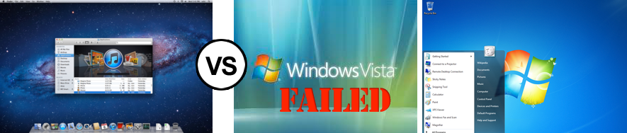

The PC world was turned upside down.


New & old technologies rose, evolved.
The battle for the future ensued:
People thought the web was broken.
They believed it had to be reborn.
billions and billions
of new pages.
A precious few embraced what had been created.
They figured out how to fix it, evolve it,
make it better.
A way that did not require a rewrite of the known web.
An unlikely champion arose.
Humanized, simple <code>.
Tech titans embraced this new way.
Then Steve Jobs killed flash
(& every other plugin technology)by not supporting them on the iOS.
As Apple destroyed flash,
Microsoft decided to build a competitor,
Silverlight.
HTML5.
This was not an isolated event.
In retrospect, Microsoft had a bungled decade.
At the beginning of the century,
Microsoft launched an online encyclopedia,
Encarta.
Just as Google turned the internet into THE encyclopedia with
Search
Then 10 years later, in 2009, Microsoft launches BING.
( The same year they shutdown Encarta. )
In 2002, Apple released OSX Lion.
In 2005, Microsoft nearly destroys their reputation by aborting a new operating system, Windows Vista, into the world.
- 
5 years later, in 2009, Microsoft tries to undo their mistake by launching Windows 7.
( By which time, Apple had released OSX 0, 1, 2, 3, 4, 5 & 6, Snow Leopard. )
In 2001, Apple released their first iPod.
By 2006, Apple had released, iPod 1, 2, 3, 4 & 5, the Mini 1 & 2, The Nano 1 & 2, and the Shuffle 1 & 2
In 2006, Microsoft comes out with the Zune.
5 years later, in 2011, Microsoft discontinues Zune hardware.
(In 2011, Apple was shipping, new versions of everything and had released the iPod Touch 1, 2, 3 & 4 )
In 2007, Apple released the iPhone.
By 2010, the iPhone 1, 2, 3 and 4 dominated mobile browsing.
In 2008, Google debuted Android on the HTC Dream. By 2010, Android v1.0, 1.1, 1.5 Cupcake, 1.6 Donut, 2.0/1 Eclair, 2.2 Froyo, 2.3 Gingerbread.
In late 2010, Microsoft finally answers with Windows Mobile. By 2010, iOS & Android dominated the market. To gain access to a market, Microsoft launches in Europe & partners with Nokia.
In 2010, Apple released the iPad tablet.
By 2011, iPad 2 had been released w/ iPad 3 imminent in 2012. By 2011, Android tablets began popping up everywhere. 2011, RIM debuts blackberry playbook. 2011, HP debuts and shuts down WebOS tablet. 2011, Amazon launches Kindle iFire Tablet popping up everywhere. Microsoft has not answered, yet.
2006, Amazon launched their cloud called EC2.
By 2010, much of the web ran on Amazon's cloud like Netflix.
2006, Rackspace cloud launched.
2008, Google App Engine launched. 2010, Microsoft Azure launched.
Microsoft begins to lose the browser. (the OS of the future, IMO)
2004 Firefox rises from the ashes of Netscape / Mozilla.
Developer tools, namely firebug, captured the hearts & minds of developers.
2005 Apple opensourced WebKit, the heart of Safari.
2008 Google creates Chrome, the fastest browser on the web.
The javascript engine, V8, was so good, JavaScript became fast, damn fast.
Microsoft released IE7 in 2006 & IE8 in 2008. Neither were good.
In 2010, IE9 is released, a descent browser but far from best of class.
In 1996, Java launched, a VM technology that ran anywhere.
2002, Microsoft makes .NET/C#, a Windows only VM.
IMO C# is the better language,
but we have to run on Linux & IBM/AS400, so we use Java
This decade saw a massive proliferation of languages, Ruby/RoR, Python, JVM languages (Scala, Clojure, Groovy ..)
By 2011, Javascript looked to be the dominant run anywhere runtime.
Microsoft plays the "late to the party" come from behind strategy.
That worked in the 1990's, but it failed in 2000-2010+.
Given the speed of innovation, that strategy should fail harder in the next decade.
Will they change?
Hope
2008, Microsoft embraces  over Microsoft Ajax.
over Microsoft Ajax.
2010, Microsoft creates Metro Design language. They do care about design!
2011, massive support for Javascript!
Port NodeJS, build a blazingly fast IE10, deemphasize Silverlight/WPF/.NET
Windows 8 native applications to run on WinRT w/ JavaScript APIs!
They oppose Google's Dart language in support of "making javascript better."
They publicly denounce browser plugins
Yeah, Microsoft starts to get behind the "semantic web" and open internet.
They kill IE6. They KILL IE6!
IE6 maybe the single biggest reason web developers hated microsoft.
No one knows the future... but it looks like:
HTML, CSS, Javascript:
The point is.
If you hitch career to something,
know what that something is...